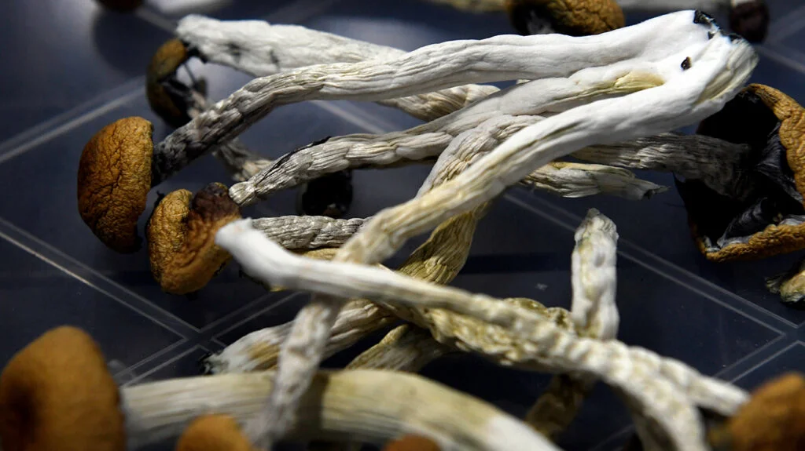

.jpg)
Zetu Shroom Store is a company that deals with all mushroom based medicines and foods. The company was founded
as a family bussines by Fred Kimani who since has been the president of the company.
The company was founded in the year 2001 and has since received numerous positive feedback from all our product
consumers. We have various varieties of products from different types of mushrooms that help prevent and cure
various diseases.
We have three main classes of mushrooms in our stores countrywide namely:
There are various types of medical mushrooms that help deal with various health problems and our company has worked toward making them available on our shelves for anyone who has health problems.
Below is a tabe showing a list of our medical mushrooms and their medical benefits.
| Mushroom type | Medical benefit |
|---|---|
| Lion's Mane | Supports healthy brain function & neuron generation |
| Reishi Mushroom | Sleep aid and potent immunomodulator |
| Cordyceps Mushroom | Improves lung capacity and increases energy |
| Chaga Mushroom | Boosts digestion and clears/protects skin |
| Turkey Tail Mushroom | Boosts immune system function |
| Shiitake Mushroom | Supports cardiovascular and liver health |
For any enquieries and orders Click Here

Psilocybin is a hallucinogenic chemical in certain mushrooms known as magic mushrooms. Eating mushrooms that
contain psilocybin can have a variety of effects, ranging from euphoria to hallucinations.
Individuals use psilocybin as a recreational drug. It can provide feelings of euphoria and sensory distortion
that are common to hallucinogenic drugs, such as LSD.
Possible effects of psilocybin include:
All orders come in capsule form or packaged as whole.
Any medical information published on this website is not intended as a substitute for informed medical advice and you should not take any action before consulting with a healthcare professional. For additional information you can contact us via